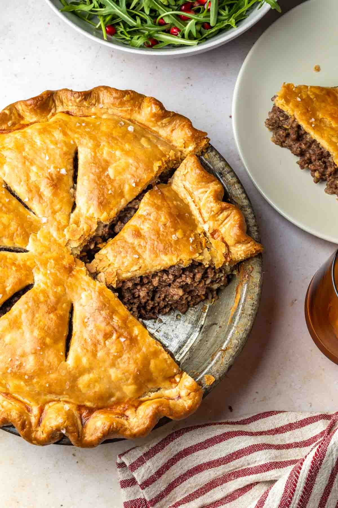
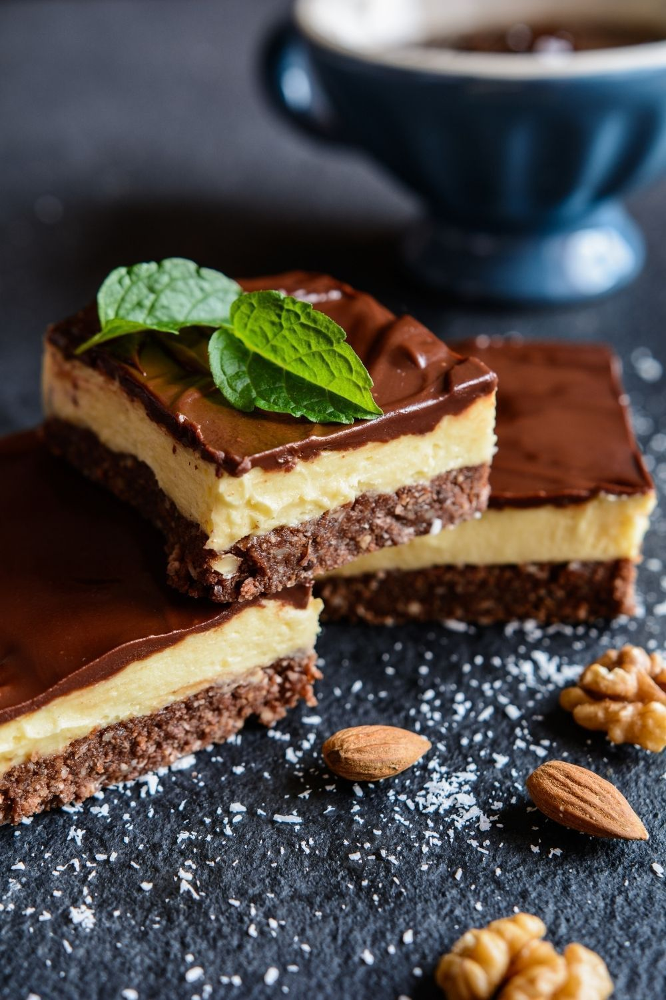
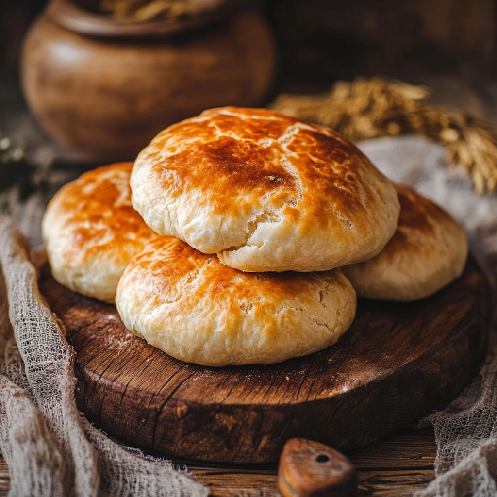
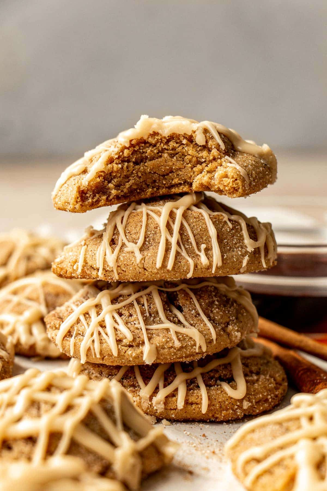

🍟 Poutine
El tesoro de Quebec
Ingredientes
- Papas
- Queso cheddar
- Salsa gravy
Preparación
Sumerge papas fritas, agrega queso y vierte gravy caliente.

🥧 Tourtière
Pastel de carne tradicional
Ingredientes
- Carne molida
- Pasta para pay
- Especias
Preparación
Se cocina la carne con especias y se hornea en masa de pay.

🧁 Butter Tarts
Dulce clásico canadiense
Ingredientes
- Mantequilla
- Azúcar morena
- Pasitas
Preparación
Se hornea una mezcla dulce dentro de masa suave.

🍫 Nanaimo Bars
Postre sin horno
Ingredientes
- Galleta
- Coco
- Chocolate
Preparación
Capas de galleta, crema dulce y chocolate fundido.

🥖 Bannock
Pan tradicional indígena
Ingredientes
- Harina
- Agua
- Sal
Preparación
Masa simple que se fríe o se hornea.

🍁 Galletas de Maple
Sabor canadiense puro
Ingredientes
- Jarabe de maple
- Harina
- Mantequilla
Preparación
Galletas dulces infusionadas con maple.